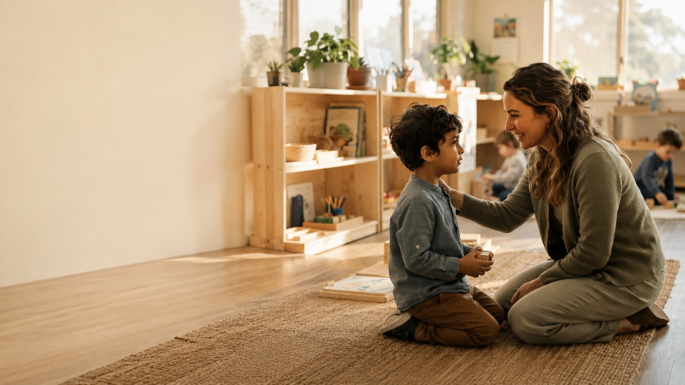

Ninguém precisa lidar com o autismo sozinho
O Acolhe é uma IA especializada em autismo infantil que traduz situações difíceis em orientações práticas — na escola e em casa, no momento em que você mais precisa.

Feito para as dúvidas que
ninguém ensinou a
responder
Nem escola nem família recebem um manual. O Acolhe transforma o que parece
imprevisível em caminhos claros, um passo por vez.

Respostas na hora da crise
Oriente-se em segundos durante momentos
de sobrecarga sensorial,
birras ou choro
intenso, com passos calmos e práticos.